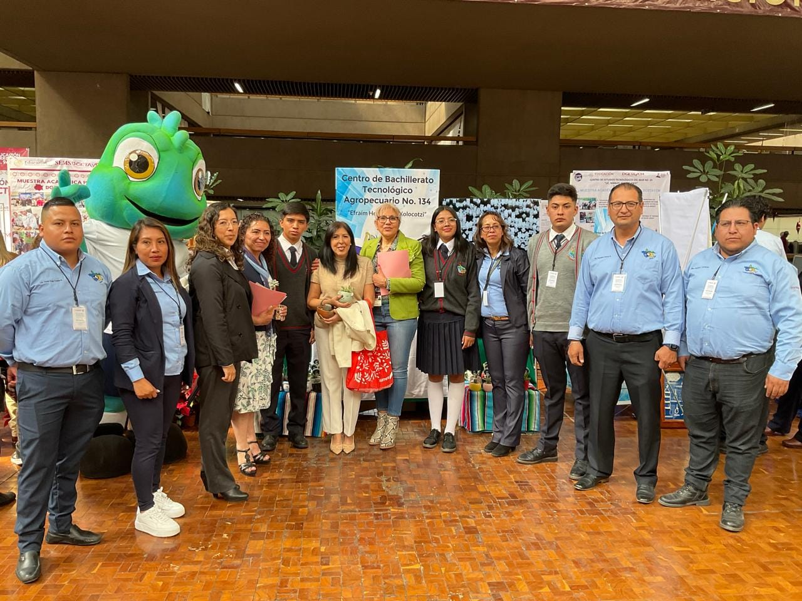
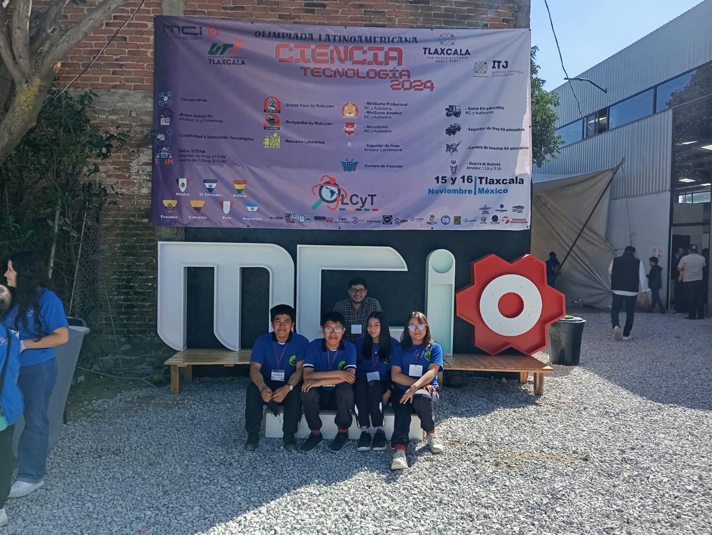
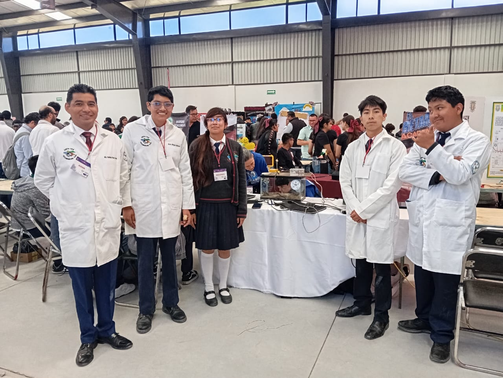
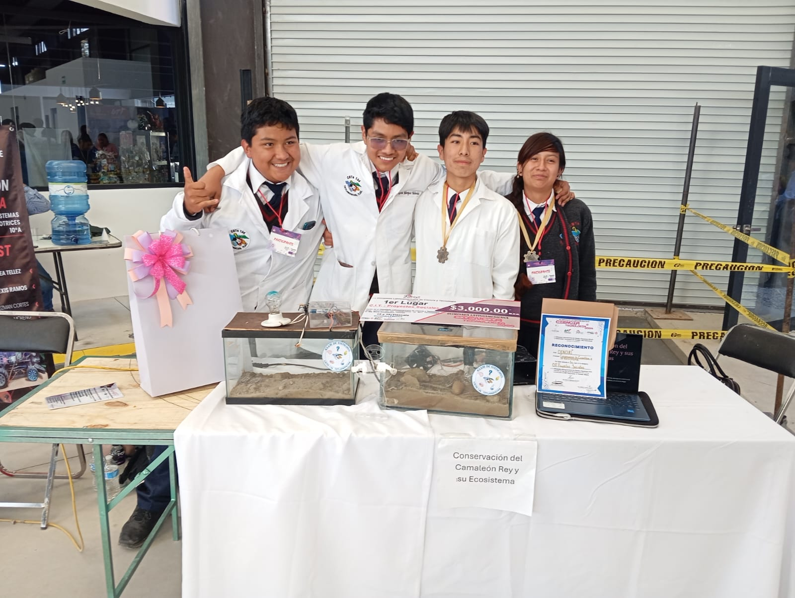
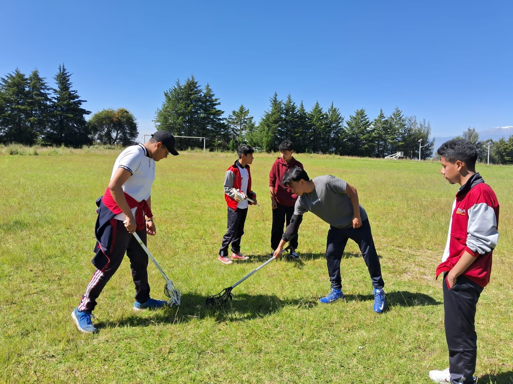
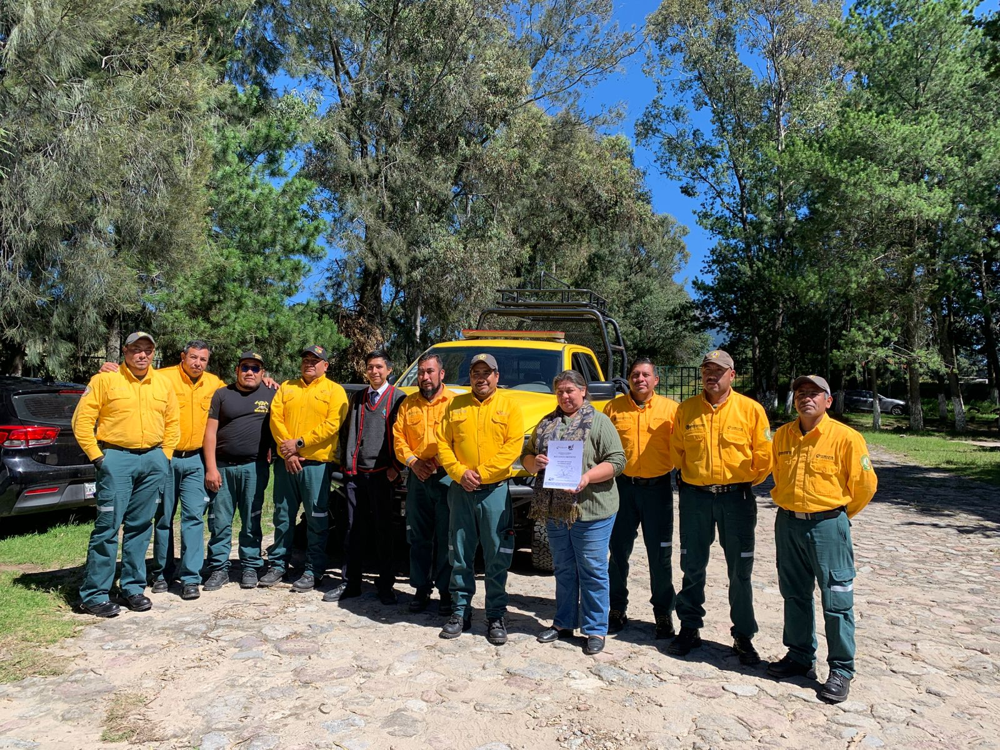
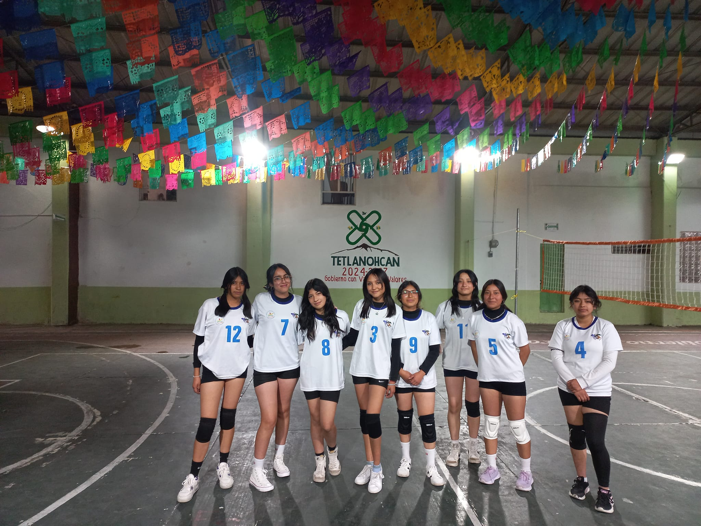
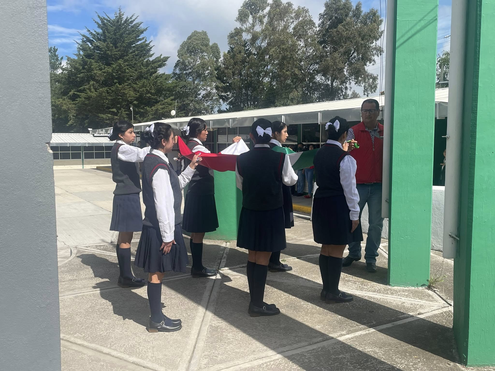
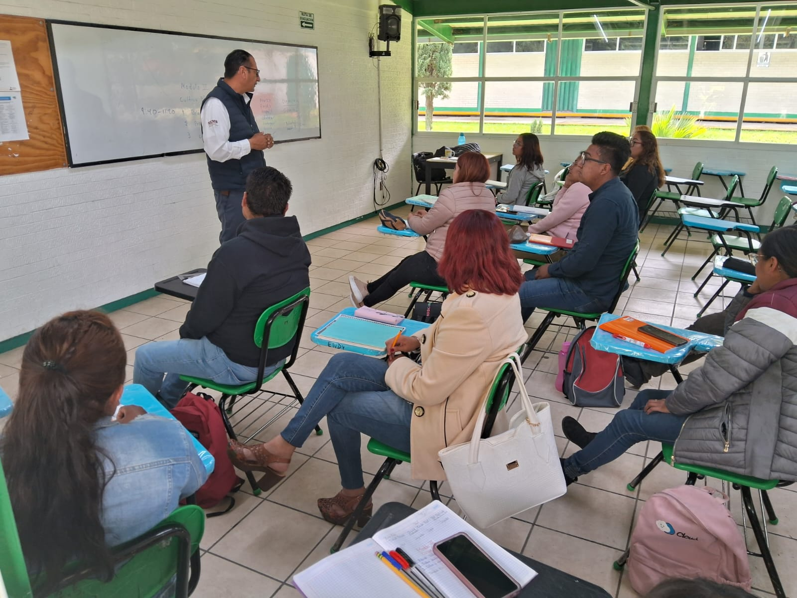
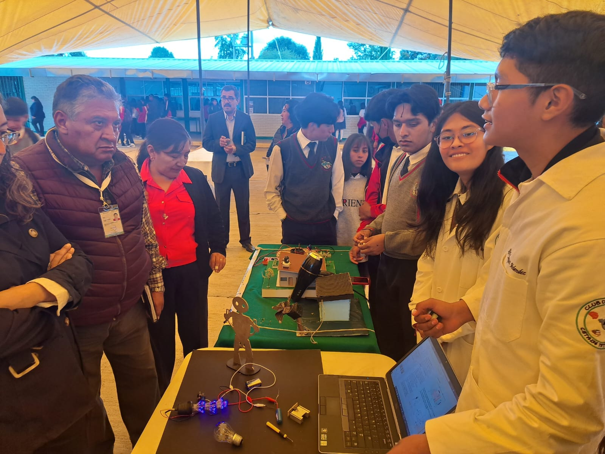

El Centro de Bachillerato Tecnológico Agropecuario No134 participó en la muestra Académica-Productiva DGETAyCM 2024, realizada en las oficinas centrales ubicadas en la Ciudad de México.
Imagen de la mascota en la Participación.
Estudiantes participantes en el evento Ciencia y Tecnología.
Olimpiada Latinoamericana de Ciencias y Tecnología 2024, llevada a cabo en las instalaciones de MCI Technology en el estado de Tlaxcala. .
Los alumnos participantes obtuvieron un 1er lugar en la competicion.
Alumnos praticando el nuevo club de Rugby.
"Curso Básico para Combatiente Forestal", impartido por la BRIGADA MOVIL 45 DE CONAFOR. Este evento realizó como parte del Proyecto Escolar Comunitario ·”Guardianes de la Malinche.
El Centro de Bachillerato Tecnológico Agropecuario el día 2 y 3 de octubre participó con sus selectivos de voleibol varonil y femenil en el marco de las actividades del programa feria 2024 de San Francisco Tetlanohcan, Tlax.
En el Centro de Bachillerato Tecnológico Agropecuario No 134, el día de hoy, se realizo acto cívico en conmemoración a la Gesta Heroica de los Niños Héroes de Chapultepec del 13 de septiembre de 1847.
El pasado sábado 31 de agosto dio inicio el ciclo escolar 2024-2025 para los alumnos de SAETAM. Bienvenidos a todos y todas, les deseamos el mejor de los éxitos en esta nueva etapa.
los alumnos y maestros del CBTa 134 llevaron a cabo "Expo-aprendizaje" en el cuál los alumnos presentaron sus proyectos realizados a lo largo del semestre como parte de su formación académica.
Participación de nuestro Plantel con los selectivos de Voleibol Femenil y Varonil, Basquetbol Varonil, Atletismo ambas ramas y Ajedrez Varonil en los Juegos Deportivos Nacionales DGTAyCM 2024 realizados en el Estado de Puebla.